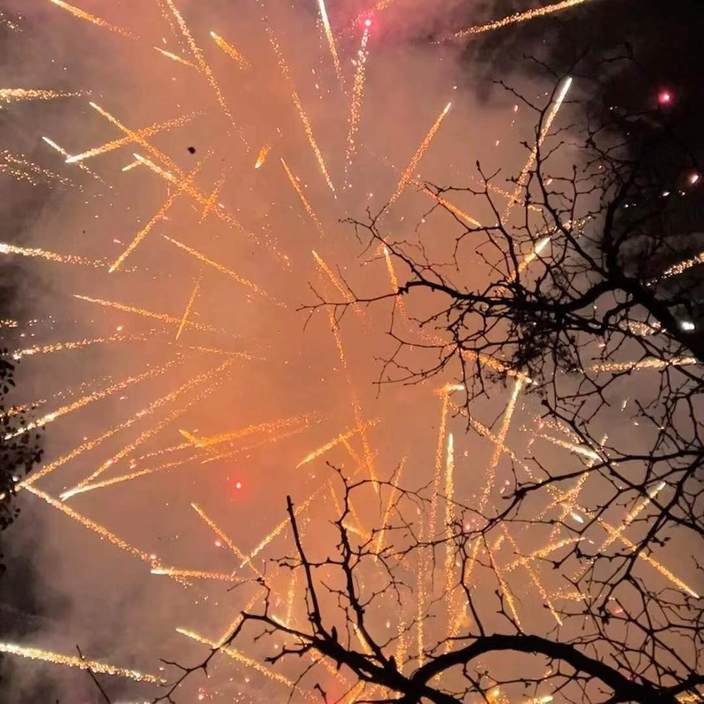
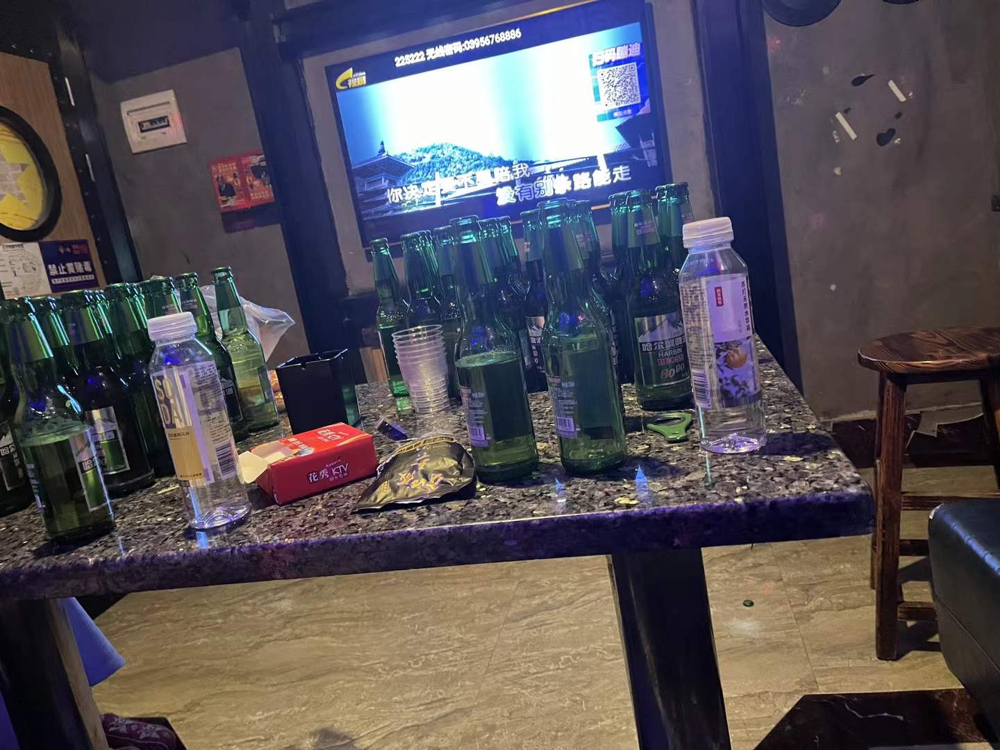
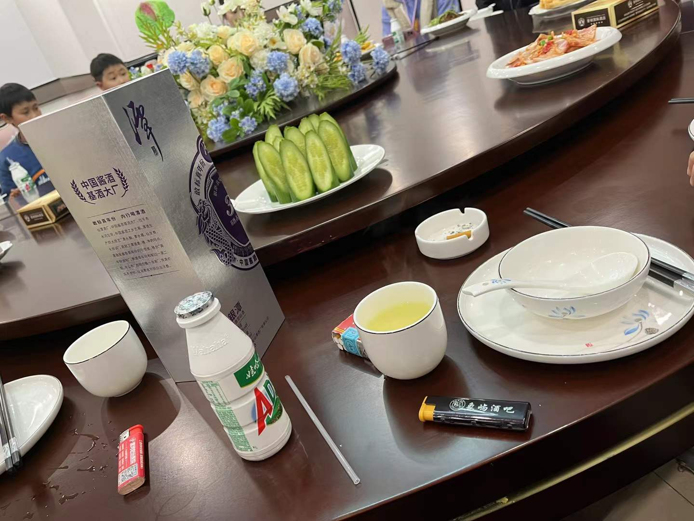
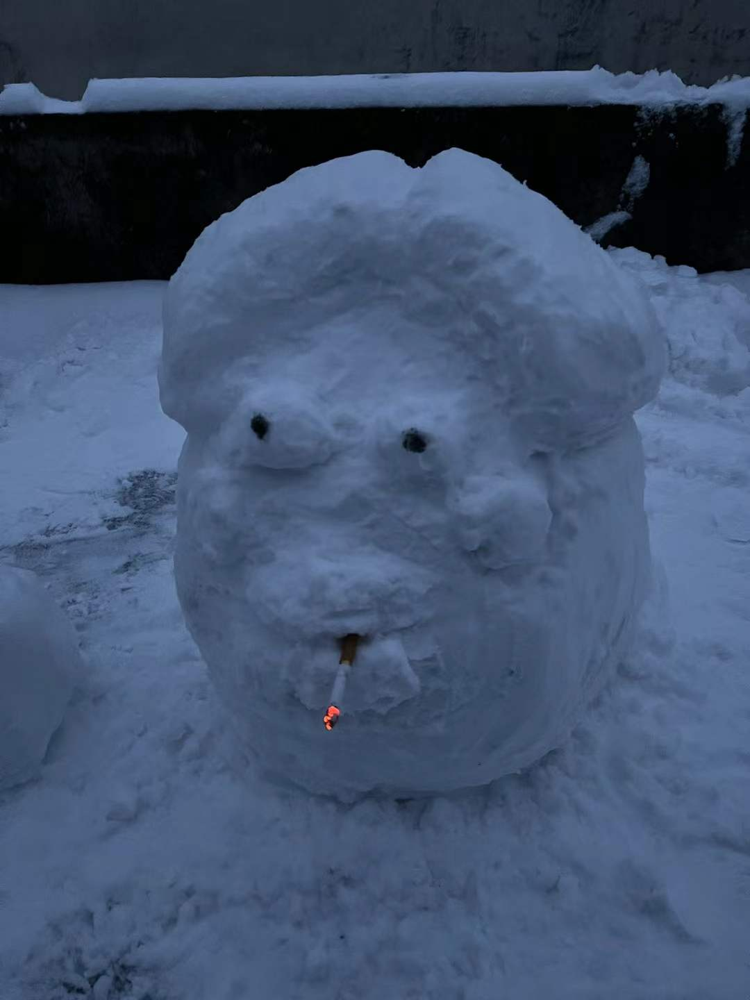

3112月 · 2024
新年烟花
新年新景开新宴，看取新年乐事绵。岁除夜雪一寸许，便觉新年喜气多。老去又逢新岁月，春来更有好花枝。休将旧事从头说，且取新年入手来。…

夜空烟花一些值得留在这里的日常。
新年新景开新宴，看取新年乐事绵。岁除夜雪一寸许，便觉新年喜气多。老去又逢新岁月，春来更有好花枝。休将旧事从头说，且取新年入手来。…



照片里的平常日子。点击可放大查看。
有些瞬间，还是要看视频才记得更清楚。
关于劳动、告别与下一段旅程。
——献给即将告别漯河面包厂的赵何伟同志
在河南漯河这座城市，有这样一位平凡而又不平凡的劳动者。
他没有坐在宽敞明亮的办公室里指点江山，也没有站在聚光灯下接受掌声。他的舞台，是面包厂里忙碌的仓库；他的伙伴，是一筐筐、一车车等待搬运的面包；他的日常，是日复一日地拉面包、运面包。
他，就是漯河面包厂仓库里令人敬佩的劳动者——赵何伟！
有人说，人生的价值在于创造了多少财富。
但赵何伟用自己的行动告诉我们：真正的伟大，往往藏在最平凡的劳动之中。
清晨，当城市还未完全苏醒，面包厂的仓库里便已开始忙碌。
一车车面包等待转运，一趟趟搬运考验着体力。
别人看到的是面包，赵何伟看到的却是责任！
别人拉的是货物，赵何伟拉的却是生活的希望！
仓库的地面，见证过他的脚步；沉重的推车，感受过他的力量；一箱箱面包，承载着他对工作的认真与执着。
他拉走的是面包，留下的是敬业；他推动的是货车，撑起的是担当！
在面包厂，面包有生产日期，也有保质期限。
但有一种品质，永远不会过期。
那就是赵何伟身上所体现的吃苦耐劳、默默奉献的劳动精神。
仓库里的工作，没有太多华丽的语言。
拉一车，再拉一车。
运一趟，再运一趟。
看似简单的重复，却需要持久的耐心和坚韧的毅力。
有人把工作当成任务，有人把工作当成责任。
而赵何伟，让我们看到了平凡劳动者值得尊敬的一面。
面包会被吃完，货车终将停下，但赵何伟在仓库里留下的奋斗印记，不会轻易消失。
如今，赵何伟即将告别这座熟悉的面包厂。
曾经走过无数遍的仓库通道，曾经推动过无数次的运货车，都将成为他人生旅途中一段特别的记忆。
从此，仓库里或许少了一道忙碌的身影。
推车的轮子依旧转动，面包依旧每天出厂，但属于赵何伟的这一段故事，已经写下了自己的篇章。
有人离职，是结束一份工作。
而赵何伟离职，是一位仓库勇士卸下肩头的重担，准备迎接更加广阔的天地。
漯河的风，吹不散他的奋斗记忆；仓库的门，关不住他奔向未来的脚步！
赵何伟同志：
感谢你曾经在漯河面包厂仓库里的辛勤付出。
那些拉过的面包、走过的路、流过的汗，都是你劳动岁月中值得铭记的印记。
愿你离开仓库之后，不再被一车车面包束缚脚步，而是推着人生的理想，奔向更加精彩的未来。
愿你今后的生活：
事业像发酵的面团一样蒸蒸日上！
钱包像装满面包的货车一样越来越满！
前途像仓库的大门一样宽敞明亮！
人生像刚出炉的面包一样，热气腾腾，充满希望！
最后，让我们以最热烈的掌声，向这位曾经奋战在漯河面包厂仓库一线的劳动者致敬！
致敬赵何伟！
致敬每一个在平凡岗位上努力生活的人！
今日告别面包厂，明日踏上青云路！
昔日仓库拉面包，今朝离职展宏图！
赵何伟，江湖路远，前程似锦！
——谨以此文，献给光荣离职的赵何伟同志。
照片、视频，还有写给赵何伟的一篇文章。想回看的日子，都放在这里。